Part 6 · Temporary Traffic Control · Chapter 6P
Typical Applications
Chapter 6P assembles the California MUTCD's full library of Typical Application (TA) drawings — 59 ready-to-adapt TTC layouts covering shoulder work, two-lane and multi-lane roadway closures, urban streets, intersections, freeways, grade crossings, bicycle/pedestrian facilities, and roundabouts. Each drawing is a minimum solution that a practicing engineer combines and adapts to the specific site; this page reproduces every drawing with the letter-coded dimensions, taper and buffer guidance, and cross-references to the governing device chapters (6B, 6D, 6K, 6L, 6M, 6N) that control how each device shown is actually designed and deployed.
6P.01Typical Applications
- 01Chapter 6N discusses typical TTC activities, and Section 6A.02 discusses development of TTC plans for the various activities. This Chapter presents typical applications for a variety of commonly encountered situations. Not every situation is addressed, but the information illustrated can generally be adapted to a broad range of conditions. In many instances an appropriate TTC plan is achieved by combining features from several typical applications — for example, work at an intersection might combine a near-side TTC zone for one street with a far-side TTC zone for the cross street, drawn from two different typical applications, while a third typical application shows how to handle the pedestrian crosswalk closure.
- 02In general, the procedures illustrated represent minimum solutions for the situations depicted. Except for the notes accompanying each figure (which are explicitly classified as Standard, Guidance, Option, or Support), the information presented in the typical application drawings themselves can generally be regarded as Guidance.
- 03TTC plans may deviate from the typical applications described in this Chapter to allow for conditions and requirements of a particular site or jurisdiction.
- 04Other devices may be added to supplement the devices shown, and device spacing may be adjusted to provide additional reaction time or delineation. Fewer devices may be used based on field conditions.
- 05Figures and tables found throughout Part 6 provide information for the development of TTC plans.
- 06Table 6P-1 is an index of the 54 numbered typical applications. In the printed manual the typical application is shown on the right-hand page with its notes on the facing page to the left; in the electronic version the notes precede the figure. The legend for the symbols used in the typical applications is provided in Table 6P-2. In many typical applications, sign spacings and other dimensions are indicated by letters using the criteria in Table 6B-1, and the formulas for determining taper lengths are provided in Table 6B-4.
- 07Most of the typical applications show TTC devices for only one direction of travel.
- 08The spacing of channelizing devices should not exceed the maximum distances shown in Table 6K-101(CA).
- 09Refer to Table 6P-1(CA) for the additional California-only typical applications (the "(CA)" drawings), which supplement the 54 base FHWA typical applications with California-specific layouts.
This chapter's 121 pages are almost entirely composed of the 59 individual TA drawings themselves (54 numbered typical applications plus five California-specific variants/additions: TA-19(CA), TA-24(CA), TA-51(CA), TA-101(CA), and TA-102(CA)). Table 6P-1 groups them by the general work-activity chapter in 6N that they illustrate, and this page follows that same grouping. Table 6P-2 defines the pictorial symbols (arrow board, channelizing device, shadow vehicle, work space, flagger, etc.) used consistently across every drawing.
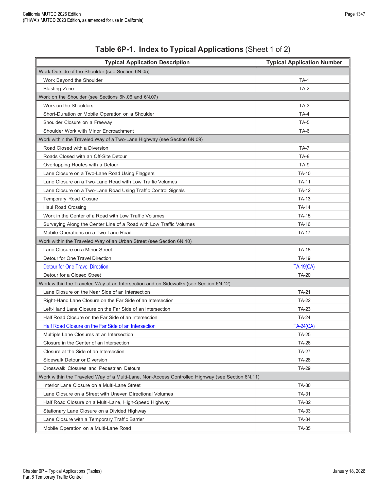
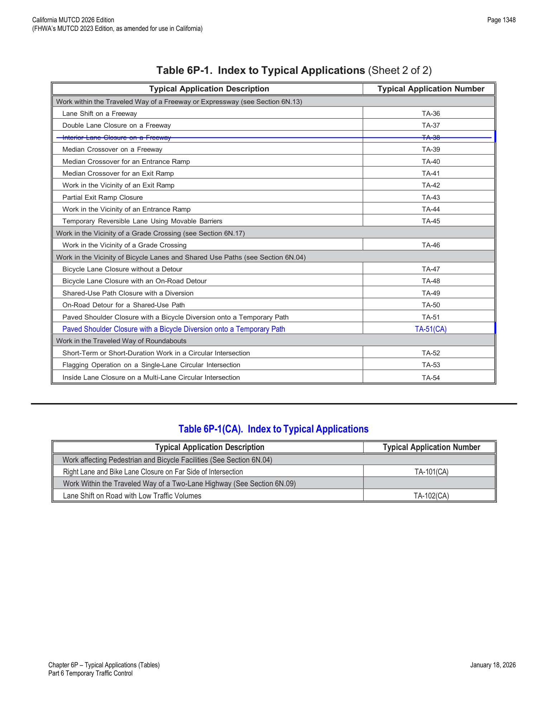
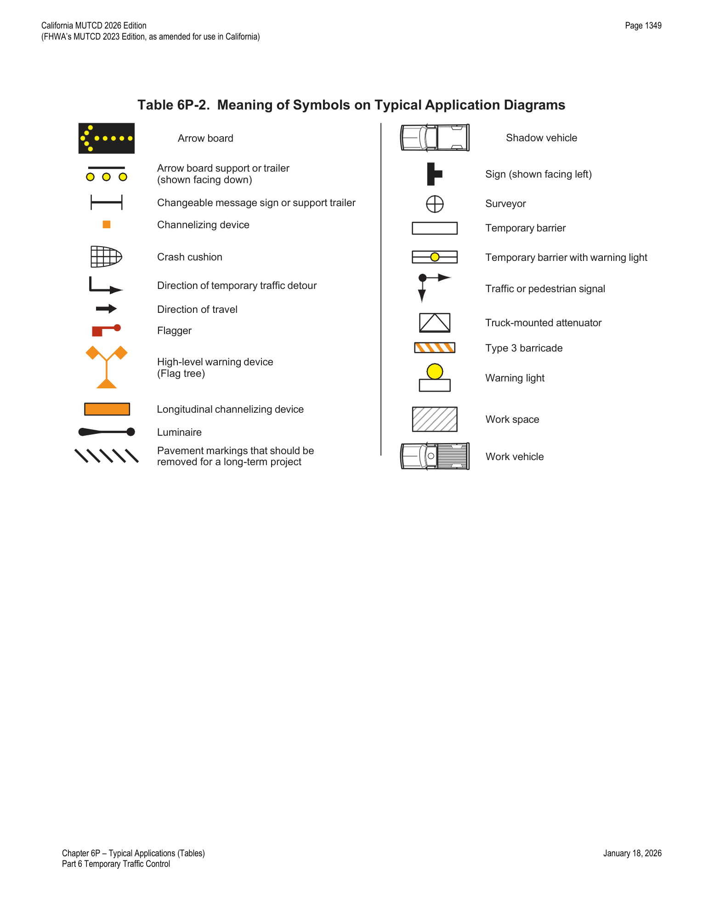
Nearly every drawing's notes also point back to Table 6B-1 for the meaning of the dimension letters (A, B, C…) used on the figures and to Table 6B-4 for the taper-length formulas (L, 1/2 L, 1/3 L) that size the merging and shifting tapers shown. Where a drawing references "Section 6M.02," it is pointing to the positive-protection/temporary-barrier provisions in Chapter 6M; where it references "Section 6L.02," it is pointing to Automated Flagger Assistance Devices in Chapter 6L; and where it references "Sections 6D.05/6D.06," it is pointing to flagger procedures in Chapter 6D.
Because the notes column for each TA is classified paragraph-by-paragraph as Standard, Guidance, Option, or Support, always read the notes before adapting a drawing — the drawing itself is only a minimum Guidance-level solution, but individual notes on it frequently escalate specific requirements (arrow board use, barrier compliance, sign wording) to mandatory Standard status.
6N.05Work Outside of the Shoulder
TA-1 — Work Beyond the Shoulder
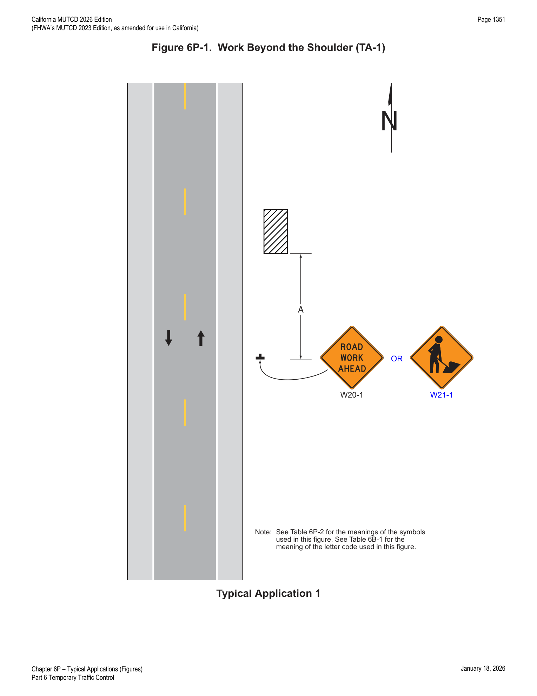
This is the simplest TA in the chapter: a ROAD WORK AHEAD (W20-1) or Workers (W21-1) sign is placed at distance A (per Table 6B-1) in advance of work that is located behind a barrier, more than 24 inches behind a curb, or 15 feet or more from the edge of any roadway — no lane closure or channelizing devices are needed. On a divided highway, an additional sign should be placed on the left-hand side of the roadway if the work is in the median. The advance sign may even be omitted for short-term, short-duration, or mobile operations if the work vehicle displays high-intensity rotating, flashing, oscillating, or strobe lights — though those vehicle lights can never be replaced by hazard warning signals alone.
TA-2 — Blasting Zone
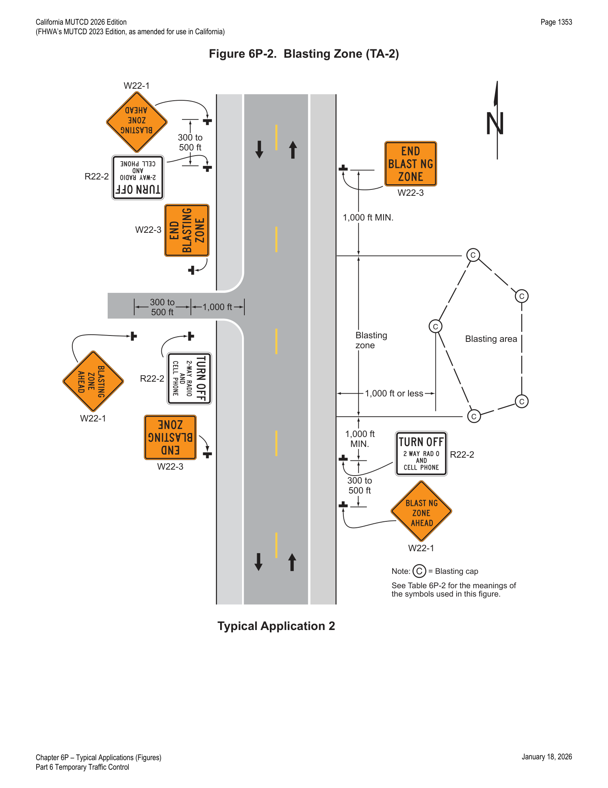
Whenever blasting caps are used within 1,000 feet of a roadway, BLASTING ZONE AHEAD (W22-1), END BLASTING ZONE (W22-3), and the radio-transmitter restriction (R22-2) signs are mandatory, typically spaced 300 to 500 feet apart with the zone itself extending at least 1,000 feet. Any side road intersecting the roadway between the two zone-boundary signs — or within 1,000 feet of any blasting cap — must receive the same signing (Standard). The blaster in charge must determine before each blast whether road users in the zone would be endangered, and if so, traffic is not permitted through the zone during the blast; on a divided highway the signs should be mounted on both directional roadways.
6N.06 / 6N.07Work on the Shoulder
TA-3 — Work on the Shoulders
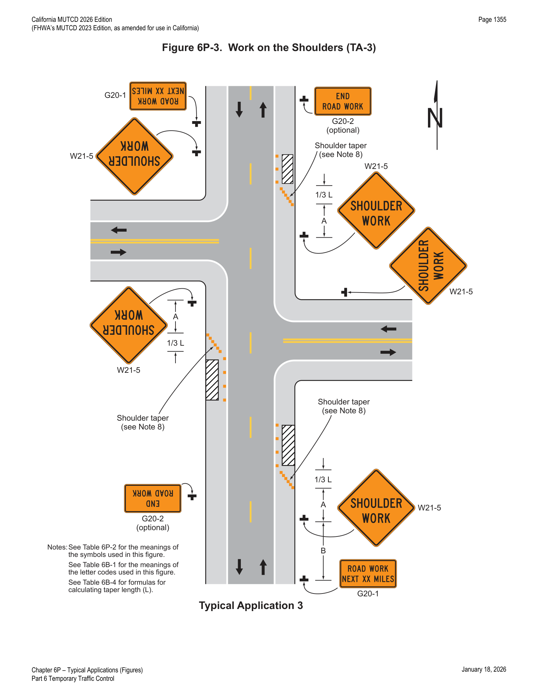
A SHOULDER WORK (W21-5) sign (or Workers symbol sign) is placed at distance A, with a 1/3 L shoulder taper of channelizing devices closing off the work space; END ROAD WORK (G20-2) is optional at the downstream end. When a paved shoulder 8 feet or wider is closed, at least one advance warning sign and channelizing devices delineating the closure are mandatory (Standard) to keep vehicular traffic within the traveled way. For short-duration operations of 60 minutes or less, all signs and devices may be eliminated if the work vehicle displays high-intensity rotating, flashing, oscillating, or strobe lights instead.
TA-4 — Short-Duration or Mobile Operation on a Shoulder
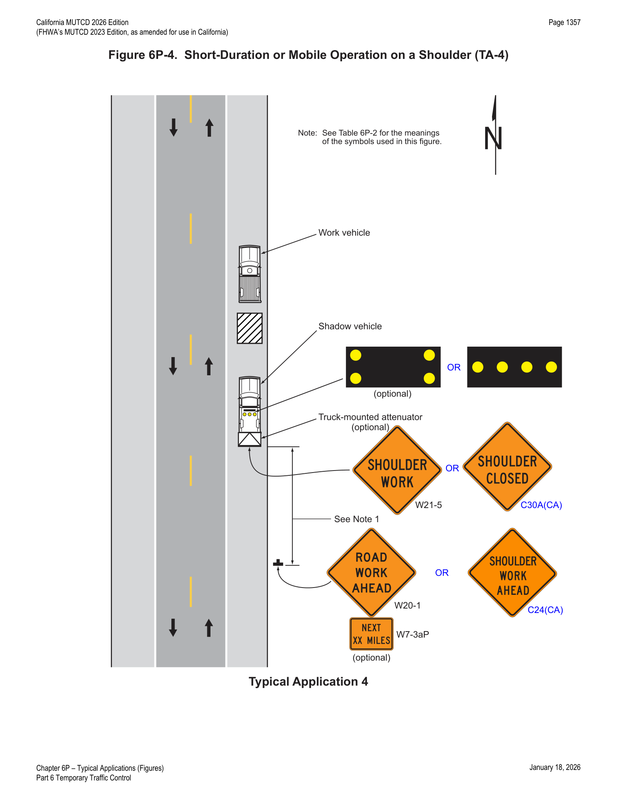
Where multiple short work locations occur within a limited distance, vehicle-mounted ROAD WORK AHEAD (W20-1) or SHOULDER WORK AHEAD (C24(CA)) signage may substitute for stationary signs, provided the distance to the work does not exceed 5 miles; between 2 and 5 miles a Supplemental Distance (W7-3aP) plaque should be added. If an arrow board is used on the shoulder it must operate in the caution mode (Standard), and vehicle-mounted sign legends must be covered or turned away when work is not actively underway.
TA-5 — Shoulder Closure on a Freeway
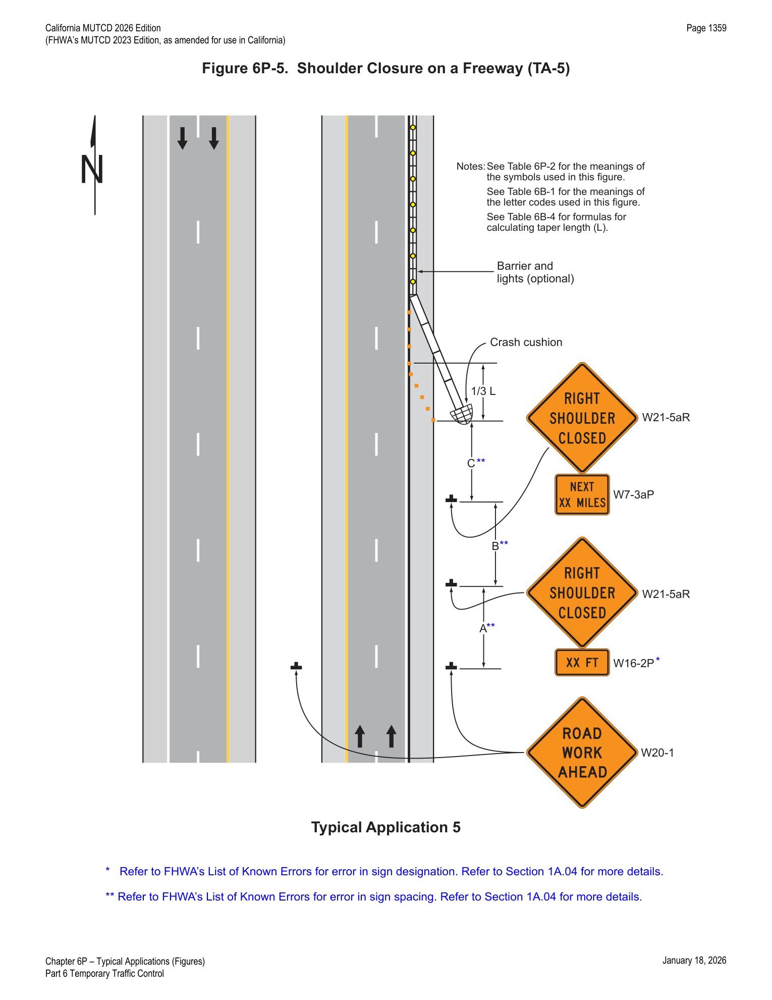
This drawing is the long-term counterpart to TA-3, using a barrier (with crash cushion) rather than devices alone to close a freeway shoulder, at dimension C offset with a 1/3 L taper. RIGHT/LEFT SHOULDER CLOSED (W21-5aR) signs should be used on limited-access highways where disabled vehicles have no opportunity to pull off, and if road users can't see a pull-off area beyond the closure, the sign should state the closure length in feet or miles. Whether to use a barrier is a matter of engineering judgment, but any barrier used must comply with the positive-protection provisions of Section 6M.02 (Standard).
TA-6 — Shoulder Work with Minor Encroachment
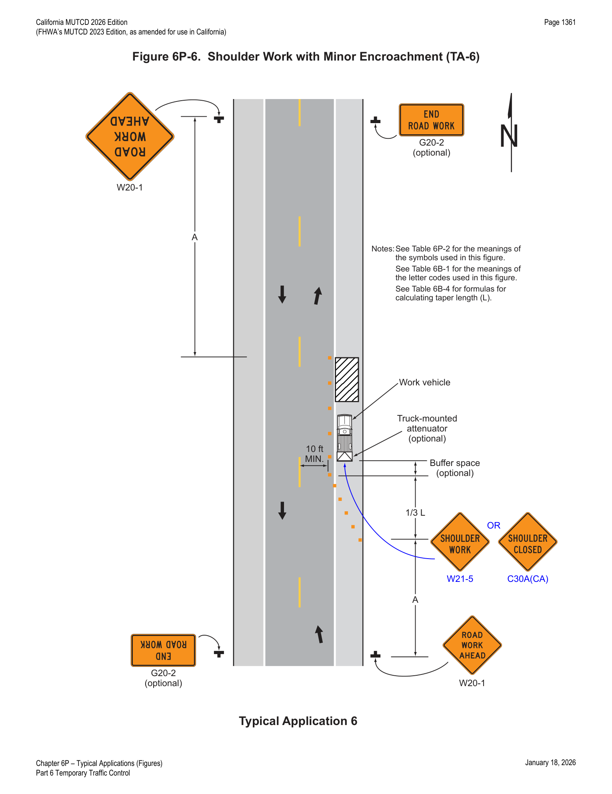
Used on lower-speed minor roads where the work space needs slightly more room than the shoulder alone, this drawing narrows the adjacent lane with a 1/3 L taper while maintaining a 10-foot minimum lane width (9 feet may be used for short-term, low-volume, low-speed work excluding larger commercial vehicles). Shadow and work vehicles must display high-intensity rotating, flashing, oscillating, or strobe lights (Standard), and the notes carry extensive bicycle-accommodation guidance — the Bicycle Crossing (W11-1) sign with an IN ROAD/IN STREET plaque, and speed-reduction countermeasures per Sections 6B.01 and 6C.04 — for situations where bicyclists must share the narrowed lane with motor vehicles.
6N.09Work Within the Traveled Way of a Two-Lane Highway
TA-7 — Road Closure with a Diversion
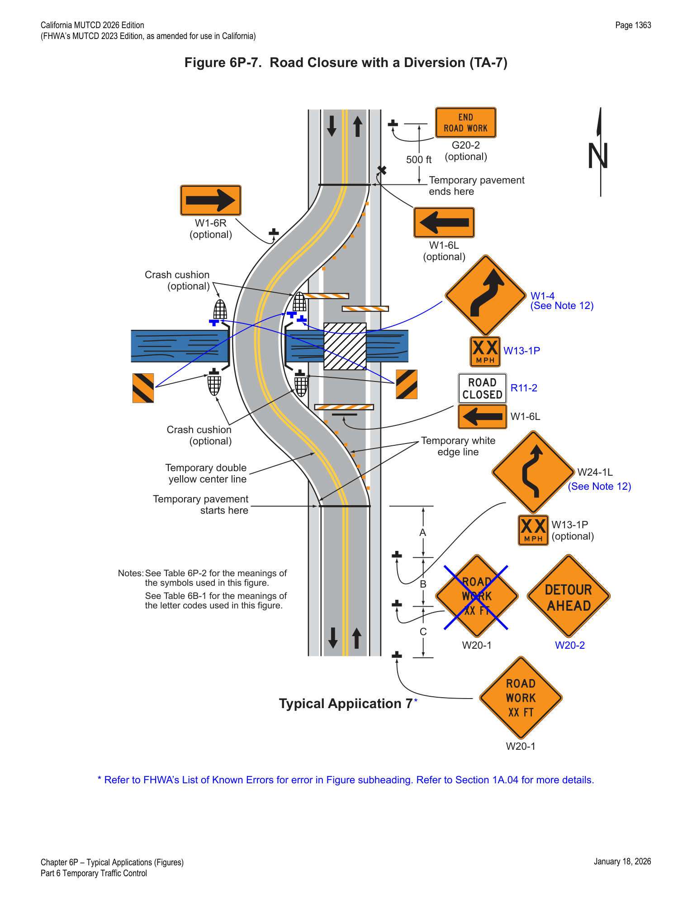
Traffic is shifted onto a temporary paved diversion around a short closure; devices are shown for one direction only but similar devices must be placed for the opposing direction (Standard), and conflicting pavement markings must be removed before the new pattern opens to traffic. Reverse Curve (W1-4) signs are used where the diversion's tangent section exceeds 600 feet; a Double Reverse Curve (W24-1) sign may substitute when both curves share the same recommended speed, and Reverse Turn signage is required if curve speeds are 30 mph or less. Any temporary barriers and end treatments used must be crashworthy (Standard).
TA-8 — Road Closure with an Off-Site Detour
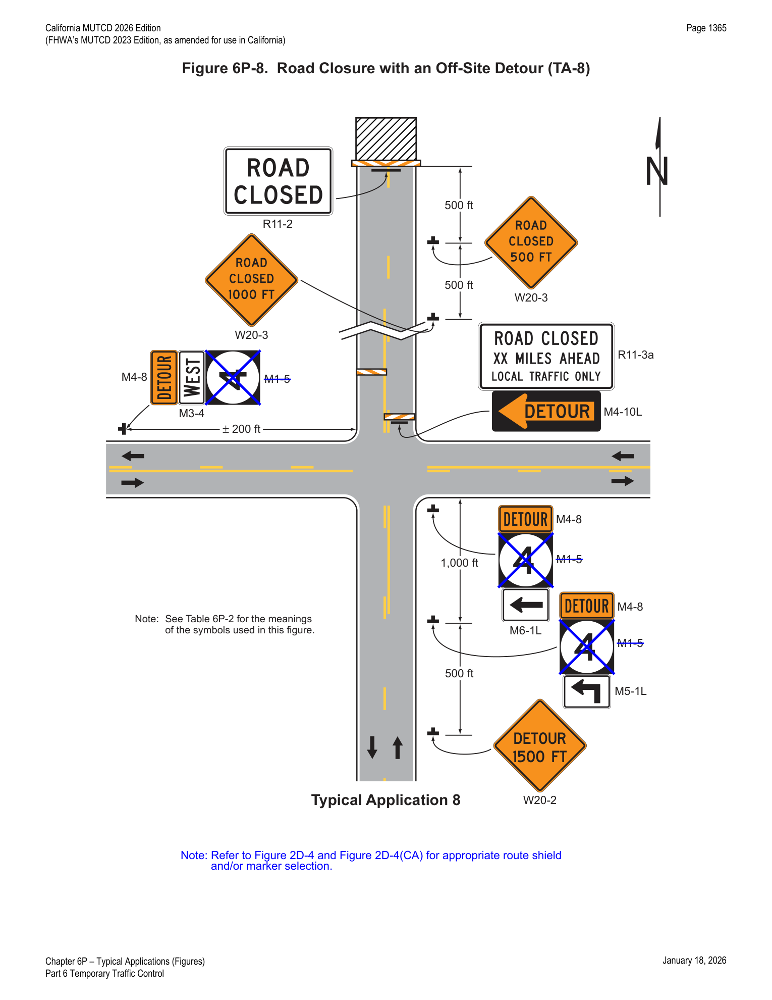
Where the closure requires routing traffic onto an entirely different alignment, ROAD CLOSED (R11-2) and DETOUR (W20-2, M4-8, M4-10) assemblies are placed on Type 3 Barricades at the intersection, with advance detour signing at 500 to 1,000 feet. Route shield and marker selection follows Figures 2D-4 through 2D-6, and regulatory devices along the detour route should be modified for the duration of the closure.
TA-9 — Overlapping Routes with a Detour
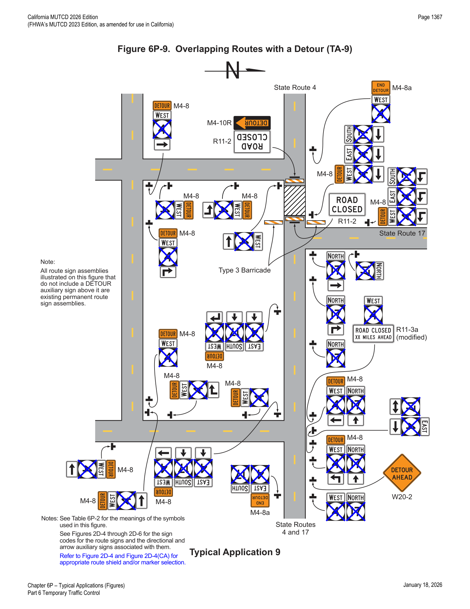
Purpose-built for detouring a signed, numbered highway (as opposed to TA-8's generic street detour), this drawing strings existing and modified route-shield assemblies along the temporary route; devices are shown for one direction only and must be mirrored for the opposite direction (Standard). STOP or YIELD signs should be added at side roads along the temporary route as needed, and flashing lights or cardinal direction plaques may supplement the route markers.
TA-10 — Lane Closure on a Two-Lane Road Using Flaggers
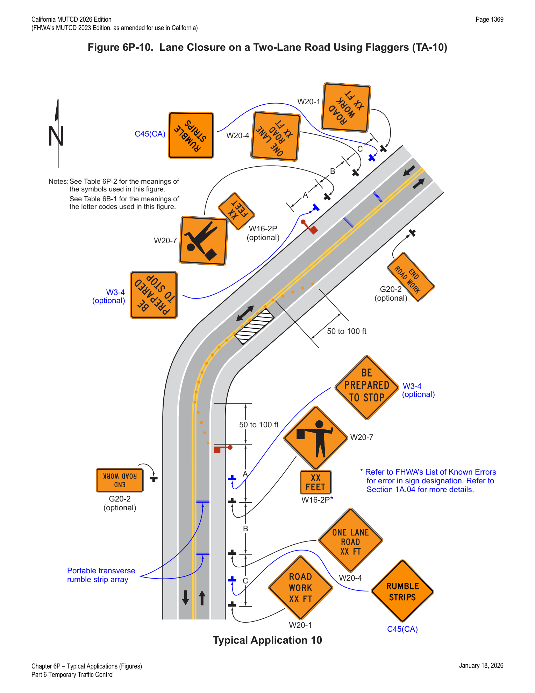
The baseline one-lane, two-way flagging operation: ROAD WORK AHEAD, Flagger (W20-7), and ONE LANE ROAD (W20-4) signs at 50–100 foot spacing on each approach, with a BE PREPARED TO STOP (W3-4) sign optionally added, and a portable transverse rumble strip array (C45(CA)) available as a supplemental alert. Automated Flagger Assistance Devices (Section 6L.02) may substitute for a flagger where only one approach lane exists, and flagger stations must be illuminated at night (Standard). Where a grade crossing falls within or upstream of the queue, the buffer/transition area must be extended so queued traffic does not back up onto the tracks, per Caltrans Standard Plan T13 for State highways.
TA-11 — Lane Closure on a Two-Lane Road with Low Traffic Volumes
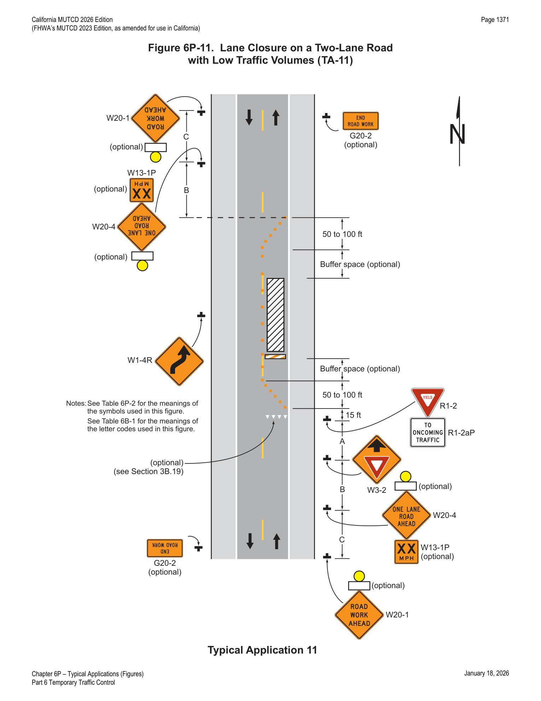
An unflagged alternative to TA-10, usable only where traffic volume produces sufficient gaps and drivers on both approaches can see through and beyond the work site (i.e., the non-priority approach has sight distance equal to the safe passing sight distance — Standard). YIELD (R1-2) with an optional Cross Traffic Does Not Stop (R1-2aP) plaque governs the yielding approach; Type B flashing lights may be added to the warning signs for night closures. See Sections 3B.03 and 6E.06 for the supporting markings and priority-control background.
TA-12 — Lane Closure on a Two-Lane Road Using Temporary Traffic Control Signals
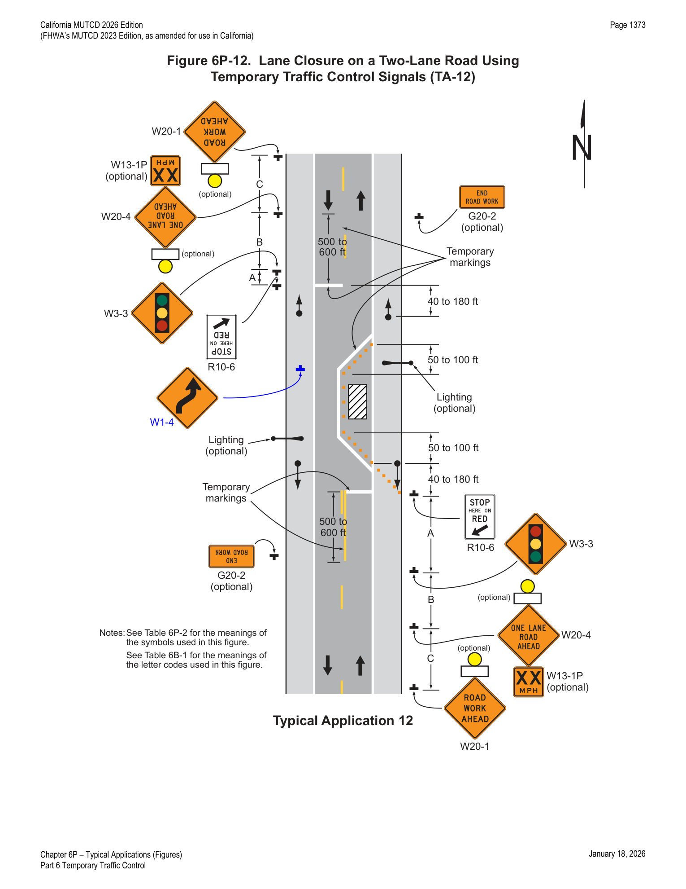
Preferred over flaggers for long-term projects or any closure that would otherwise require night flagging, temporary signals here must be installed and timed per the Part 4 signal provisions, with red clearance intervals long enough to clear the one-lane section and safeguards against conflicting displays at each end (all Standard). Stop lines are required for long-term closures, with conflicting markings removed and later restored; sign spacing runs 500–600 feet for the Signal Ahead warning and 40–180 feet for the ONE LANE ROAD sign.
TA-13 — Temporary Road Closure
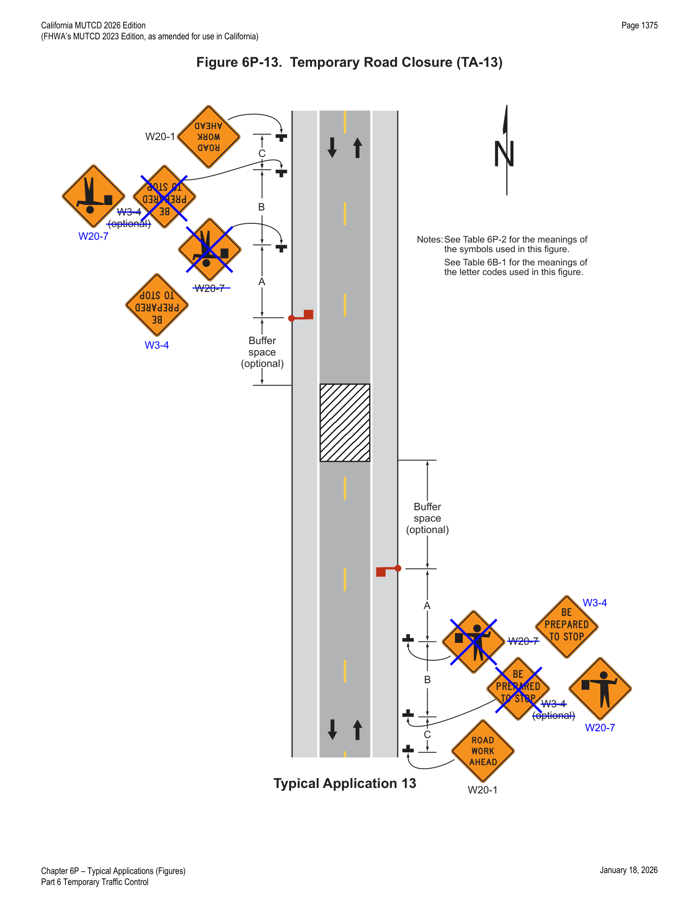
For a planned daytime closure not exceeding 20 minutes, a flagger or uniformed law enforcement officer is mandatory (Standard), following the flagger procedures of Sections 6D.05–6D.06. A BE PREPARED TO STOP sign may be added, and an Automated Flagger Assistance Device may substitute where only one approach lane exists.
TA-14 — Haul Road Crossing
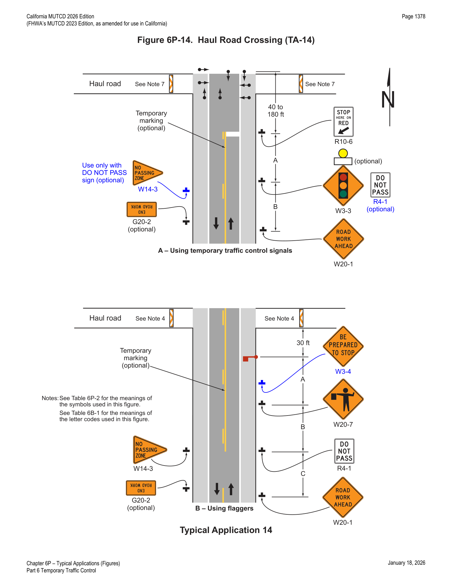
Shown in two variants — a signalized method and a flagging method — for controlling the crossing of a construction haul road with a public highway. When the haul road is not in use, it must be closed with Type 3 Barricades and its Flagger symbol signs covered (Standard); temporary signals must control both roads, use stop lines with existing conflicting markings removed, and the all-red clearance must let a haul-road vehicle clear the crossing before opposing green is shown. Floodlights should illuminate the crossing at night, and early coordination with the affected railroad or transit agency is expected wherever this drawing touches an active grade crossing.
TA-15 — Work in the Center of a Road with Low Traffic Volumes
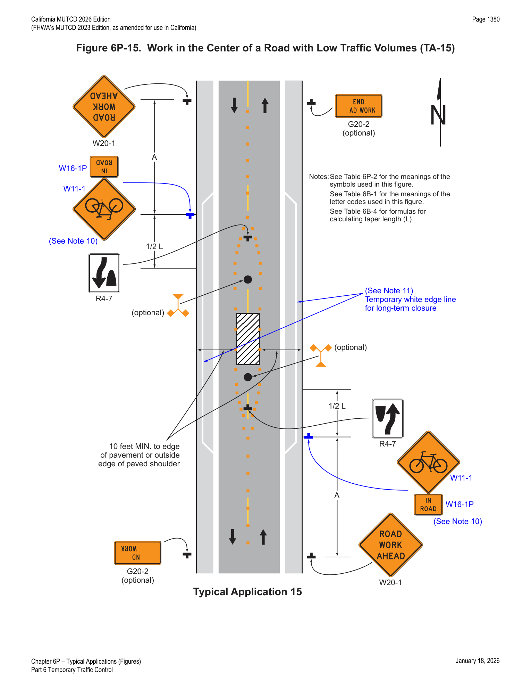
A center-line work space flanked by 1/2 L tapers, keeping at least 10 feet of lane width on either side measured to the edge of pavement or paved shoulder; long-term closures should add a temporary white edge line. This layout is only for low-volume roads — for surveying or center-line work on a high-volume road, a full lane must instead be closed using TA-10 (Standard).
TA-16 — Surveying Along the Center Line of a Road with Low Traffic Volumes
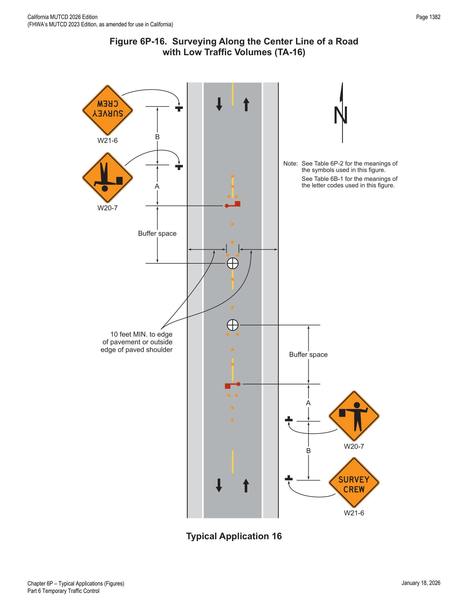
Nearly identical in footprint to TA-15 but for survey crews, using SURVEY CREW AHEAD (W21-6) signs and cones placed only 6 to 12 inches off the center line, with the 10-foot lane-width minimum preserved on each side. A flagger should warn crew members who cannot watch approaching traffic themselves, and — as with TA-15 — a high-volume road requires a full lane closure via TA-10 instead (Standard).
TA-17 — Mobile Operations on a Two-Lane Road
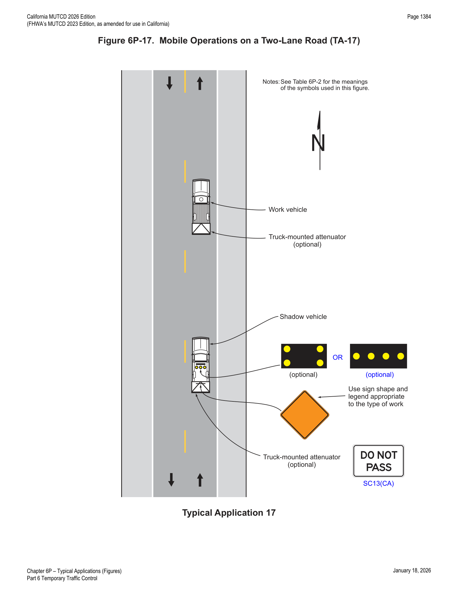
A moving work-vehicle/shadow-vehicle convoy for continuously advancing operations such as striping or crack-sealing; vehicle-mounted signs must be unobscured and covered when not working, and both vehicles must display high-intensity rotating, flashing, oscillating, or strobe lights (Standard). An arrow board, if used, must operate in the caution mode. Critically, this typical application shall not be used on California State highways — Caltrans Standard Plan T17 governs moving lane closures on the State highway system instead (Standard).
TA-102(CA) — Lane Shift on Road with Low Traffic Volumes
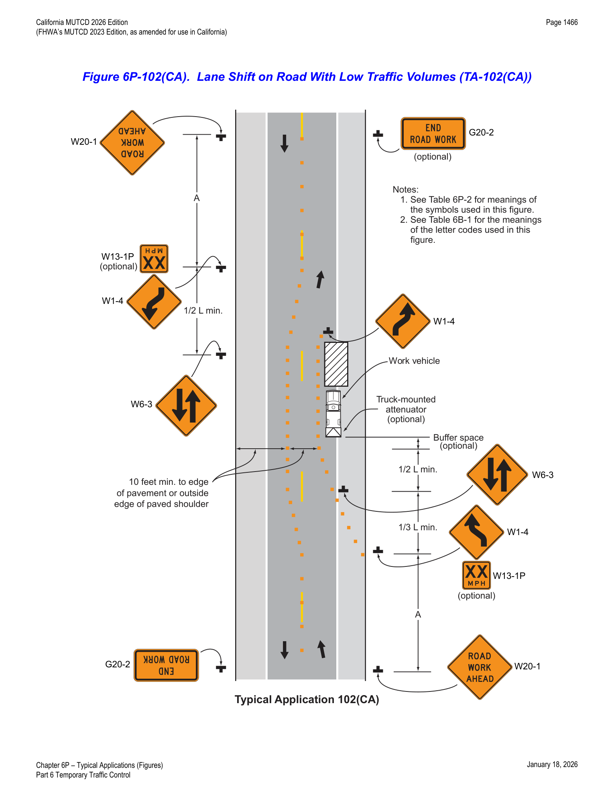
A California addition grouped with the two-lane-highway applications, this drawing shifts traffic around a center-of-road work space rather than narrowing around it in place, using a 1/3 L minimum entry taper and 1/2 L minimum tapers framing the shift, while keeping the 10-foot lane-width minimum to the pavement or shoulder edge. Workers in the roadway must wear high-visibility apparel per Section 6C.04 (Standard), and a work vehicle with high-intensity lights may substitute for the tapering channelizing devices or high-level warning devices.
6N.10Work Within the Traveled Way of an Urban Street
TA-18 — Lane Closure on a Minor Street
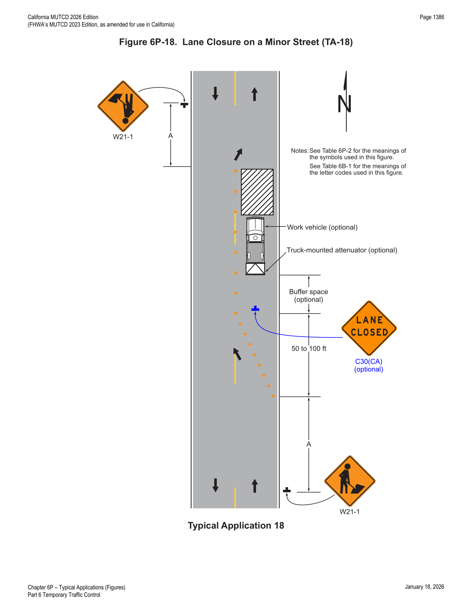
Reserved for low-speed, low-volume facilities only (Standard). Where the work space is short and road users can see beyond it, traffic may self-regulate without a flagger; otherwise one or two flaggers must be used following the TA-10 layout (Standard). WORKERS (W21-1) signs are placed at distance A (50–100 feet), with a truck-mounted attenuator optional on the work or shadow vehicle.
TA-19 / TA-19(CA) — Detour for One Travel Direction
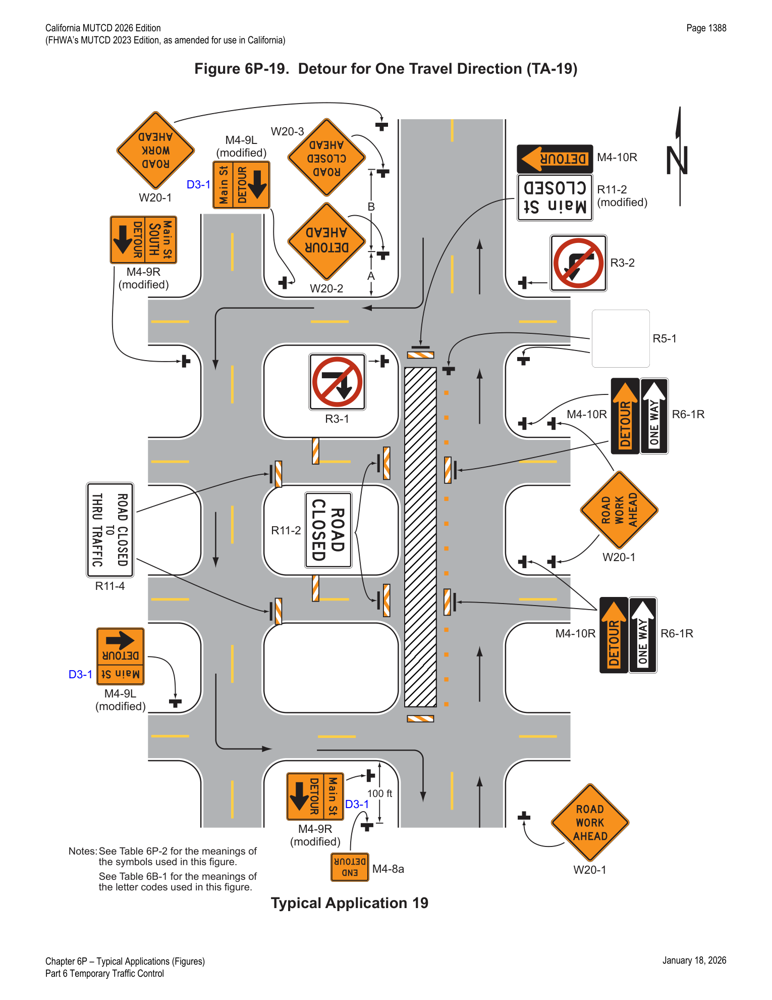
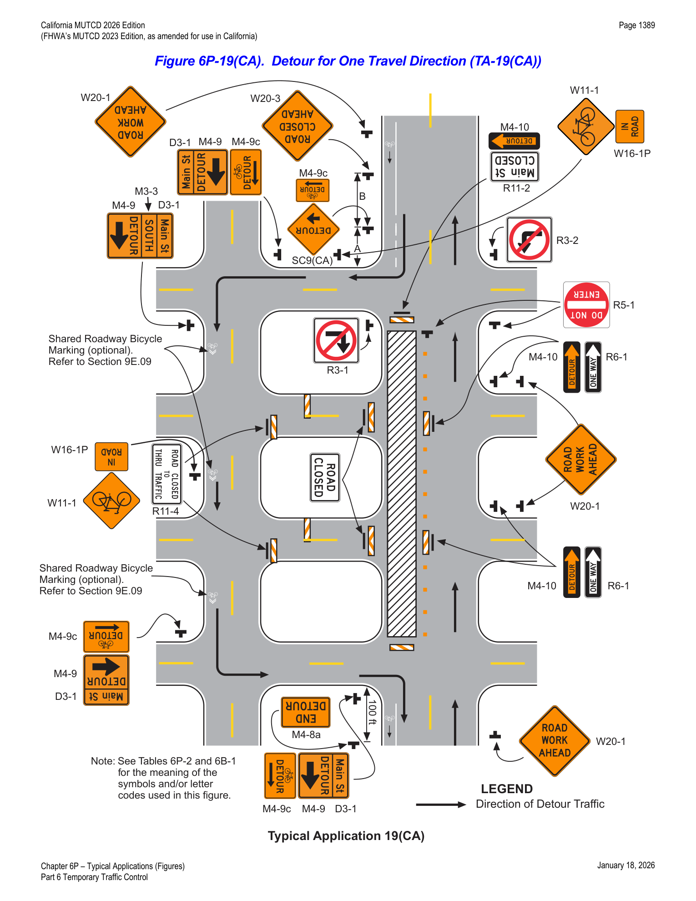
Used for streets without a posted route number, this drawing strings DETOUR (M4-8) trailblazers at intervals not exceeding 1,300 feet and at every major intersection (more frequently in urban areas); a Street Name sign, where used, must be mounted above the Detour sign (Standard). The California variant, TA-19(CA), adds bicycle-specific handling: where the detour applies to bicyclists but not pedestrians, the Bicycle Detour (M4-9c) sign replaces the Pedestrian/Bicycle Detour (M4-9a) sign, and for long-term projects a shared-roadway bicycle marking (Section 9E.09) may be used along the detour route.
TA-20 — Detour for a Closed Street
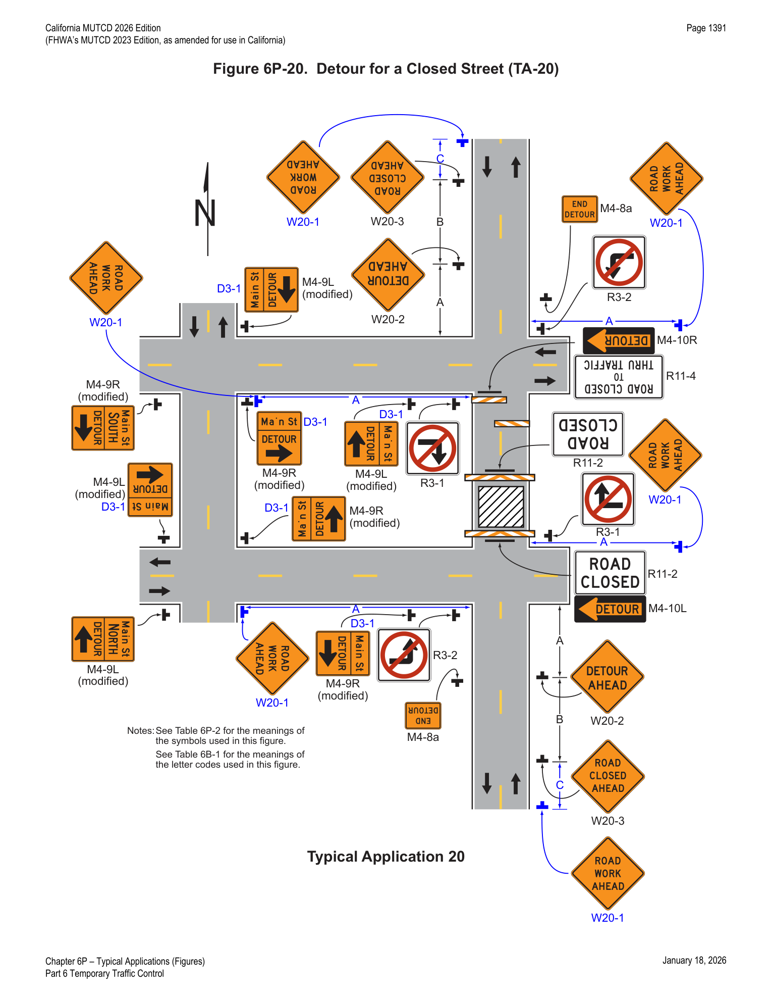
Similar in concept to TA-19 but for a full street closure requiring turns onto cross streets in both directions; again reserved for streets without posted route numbers, with a Street Name sign mounted above the Detour sign where used (Standard). Detouring a signed, numbered highway instead uses TA-9 (Support).
6N.12Work Within the Traveled Way at an Intersection and on Sidewalks
TA-21 — Lane Closure on the Near Side of an Intersection
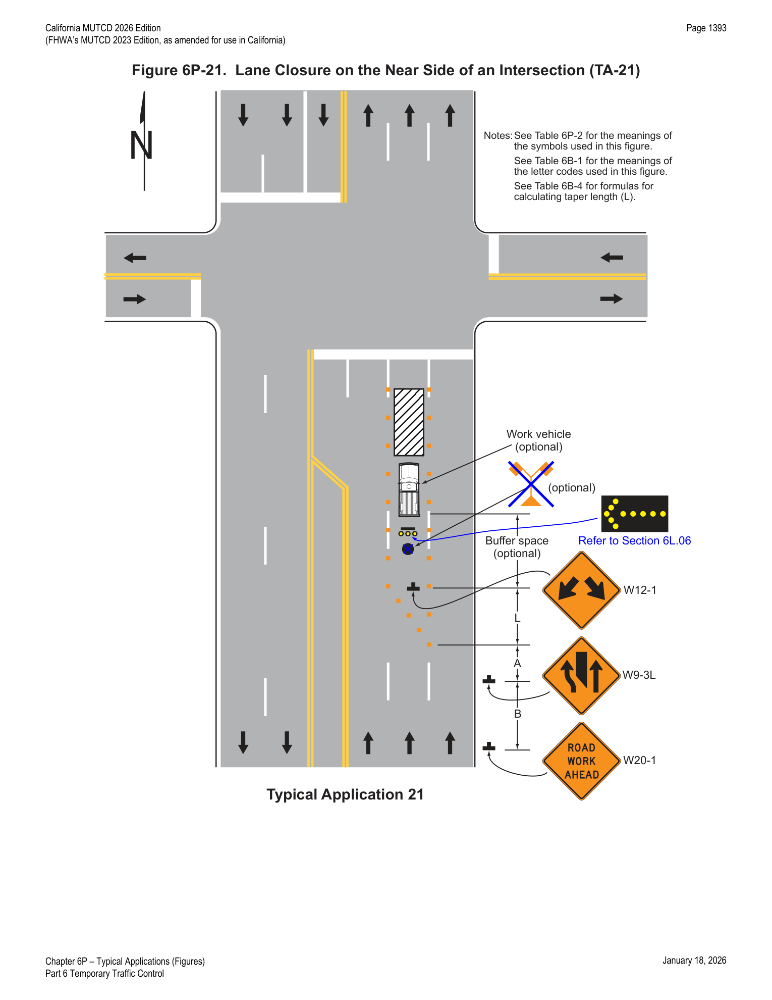
The merging taper (length L) must direct traffic into only one lane, never split between two (Standard); a left-hand taper is normally preferred so right-turn movements aren't blocked (the reverse applies where left turns predominate). If the work space extends across a crosswalk, the crosswalk itself must be closed using the TA-29 treatment.
TA-22 — Right-Hand Lane Closure on the Far Side of an Intersection
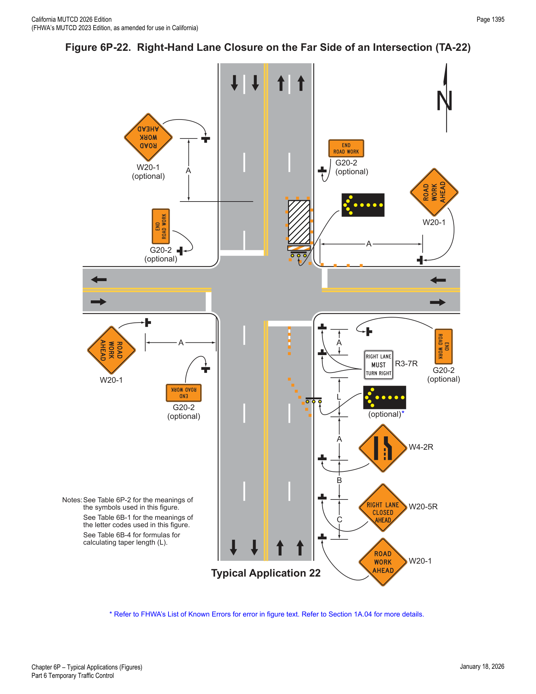
Where closing the near-side lane (per the normal TA-21 rule) would eliminate a lane carrying significant right-turn volume, that lane is instead reopened through the intersection as a dedicated right-turn bay using RIGHT LANE MUST TURN RIGHT (R3-7R) — preserving through-lane capacity by separating turning from through traffic. Lane-reduction markings follow Figure 3B-14(CA) and merge signing follows Section 2C.45.
TA-23 — Left-Hand Lane Closure on the Far Side of an Intersection
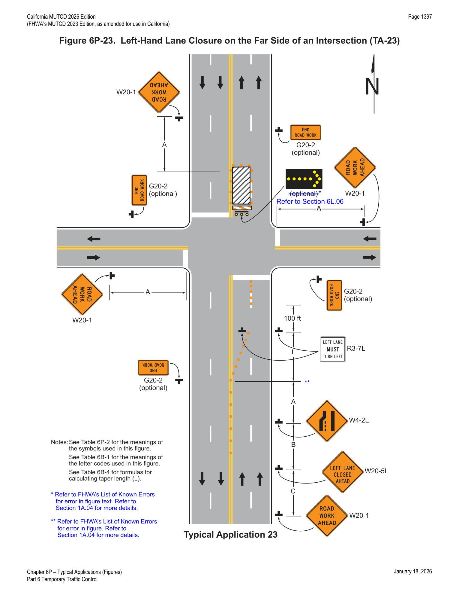
The mirror image of TA-22: where the near-side lane to be closed carries significant left-turn volume, it is reopened as a left-turn bay with LEFT LANE MUST TURN LEFT (R3-7L), preserving storage for turning vehicles so through traffic isn't delayed by a full signal cycle of queued left-turners.
TA-24 / TA-24(CA) — Half Road Closure on the Far Side of an Intersection
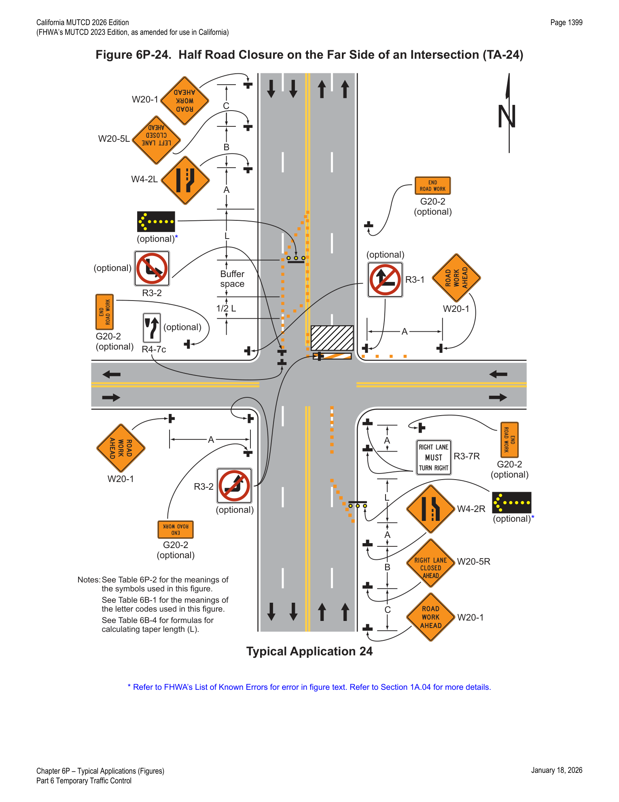
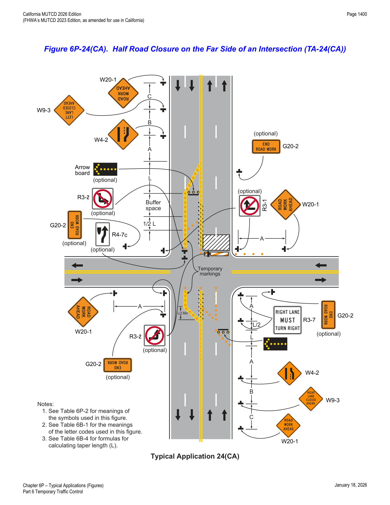
Both drawings close one full side of the roadway beyond the intersection and carry two-way traffic on the remaining half, separated by an optional buffer space and back-to-back KEEP RIGHT / NO LEFT TURN signing. The choice between them is a key California-specific distinction: TA-24 applies where the approach is stop-controlled or governed by red flashing beacons (an abrupt transition is acceptable), while TA-24(CA) applies where the approach is uncontrolled or signal-controlled (Support). As in TA-22, a right-turn-heavy closed lane may be reopened as a turn bay using RIGHT LANE MUST TURN RIGHT.
TA-25 — Multiple Lane Closures at an Intersection
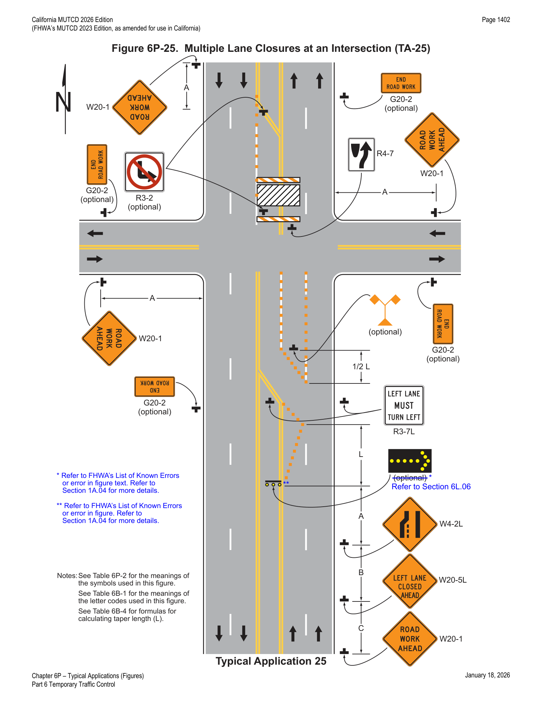
Applies the same "close on the near side any lane not carried through the intersection" principle from TA-21 to an approach where several lanes must close at once. If the left-turn volume normally using a closed turn bay is small, or opposing gaps are frequent, left turns may still be permitted on that approach rather than prohibited outright.
TA-26 — Closure in the Center of an Intersection
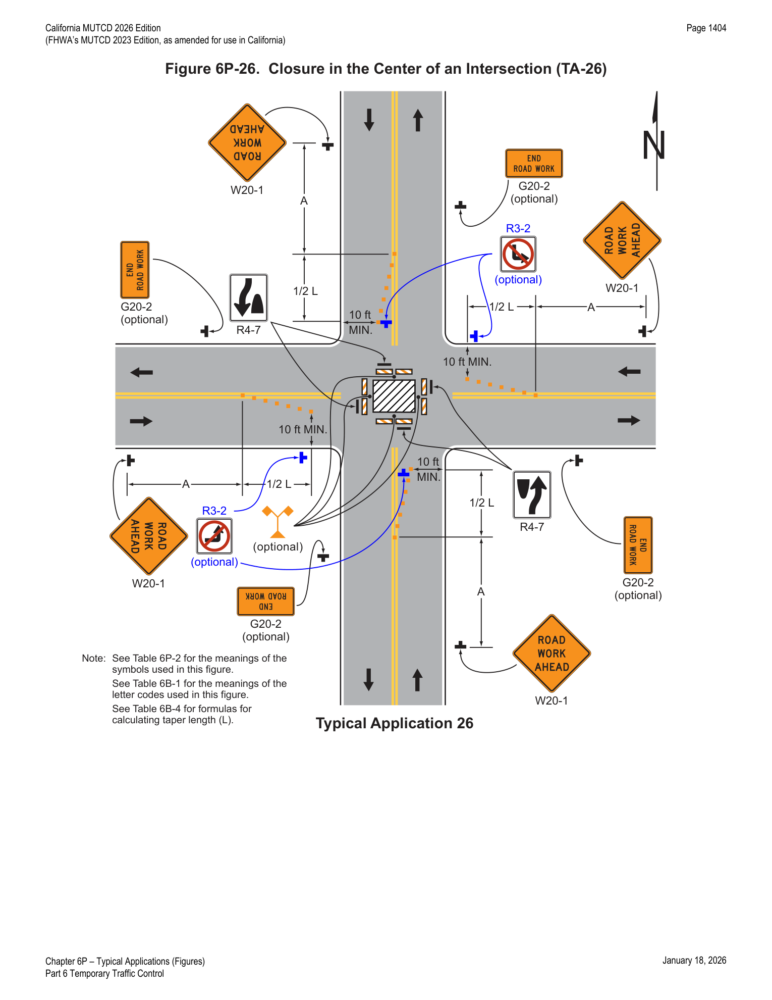
Work is staged in the center of the full intersection with all four approaches narrowed by 1/2 L tapers to a 10-foot minimum lane width (9 feet for short-term, low-speed, low-volume work). A high-level warning device may be placed in the work space if room allows, and for short-duration work the channelizing devices may be eliminated entirely in favor of a vehicle displaying high-intensity lights.
TA-27 — Closure at the Side of an Intersection
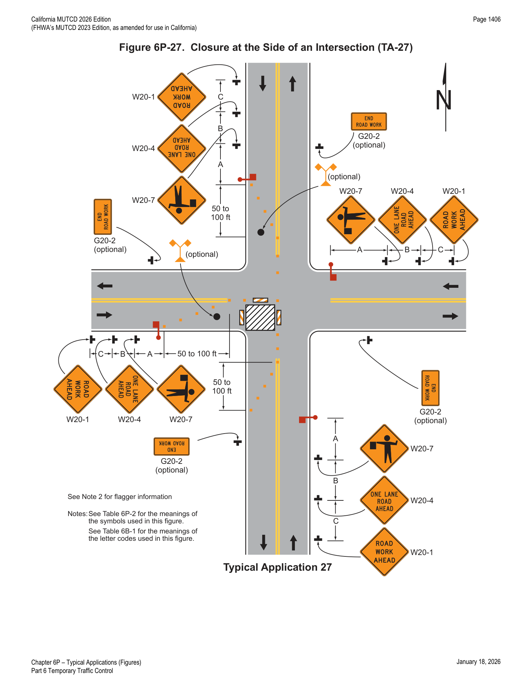
One quadrant of the intersection is closed while flagger(s) or uniformed officer(s) manage the remaining through movements; ONE LANE ROAD AHEAD (W20-4) supplements the standard ROAD WORK AHEAD/Flagger sign series at 50–100 foot spacing on each approach. Flagger stations must be illuminated at night (Standard), and turns may be prohibited where narrow streets make certain movements physically impossible for larger vehicles.
TA-28 — Sidewalk Detour or Diversion
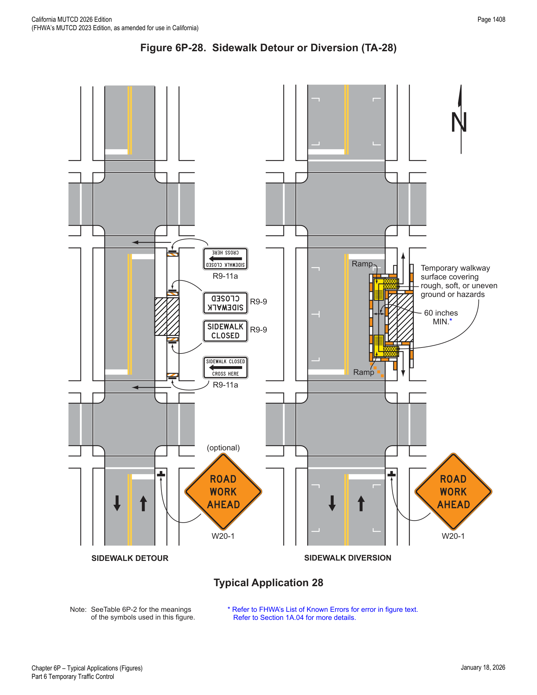
Where an existing sidewalk is closed, the temporary route must be detectable and match the accessibility features of the original facility (Standard) — a detectable pedestrian channelizing device (Figure 6K-2) must span the full width of the closed sidewalk. Temporary ramps must not exceed a 12:1 (8.33%) slope with a slip-resistant surface and a 48-by-48-inch landing at 2% cross-slope or flatter (Standard), and SIDEWALK CLOSED CROSS HERE (R9-11a) signs must include audible information devices for pedestrians with vision disabilities (Standard). Any temporary barriers used must meet Section 6M.02.
TA-29 — Crosswalk Closures and Pedestrian Detours
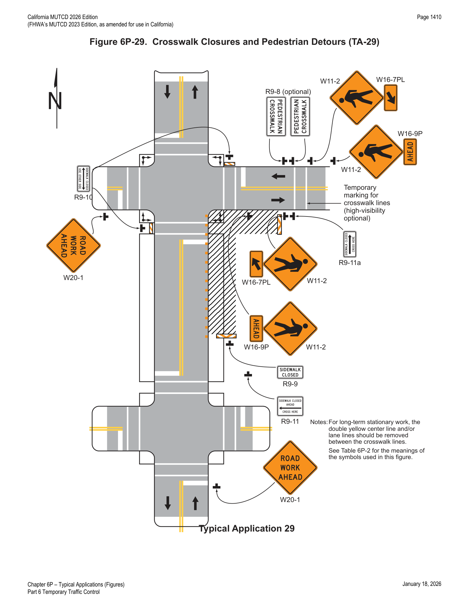
Governs closing or relocating a marked crosswalk: temporary facilities must again be detectable and accessible (Standard), curb parking must be prohibited for at least 50 feet in advance of a midblock crosswalk (Standard, see CVC §22500), and audible information devices are required at SIDEWALK CLOSED CROSS HERE (R9-11a) signs wherever midblock closures would otherwise confuse pedestrians with vision disabilities (Standard). Pedestrian signal displays for the closed crosswalk should be covered or deactivated.
6N.11Work Within the Traveled Way of a Multi-Lane, Non-Access-Controlled Highway
TA-30 — Interior Lane Closure on a Multi-Lane Street
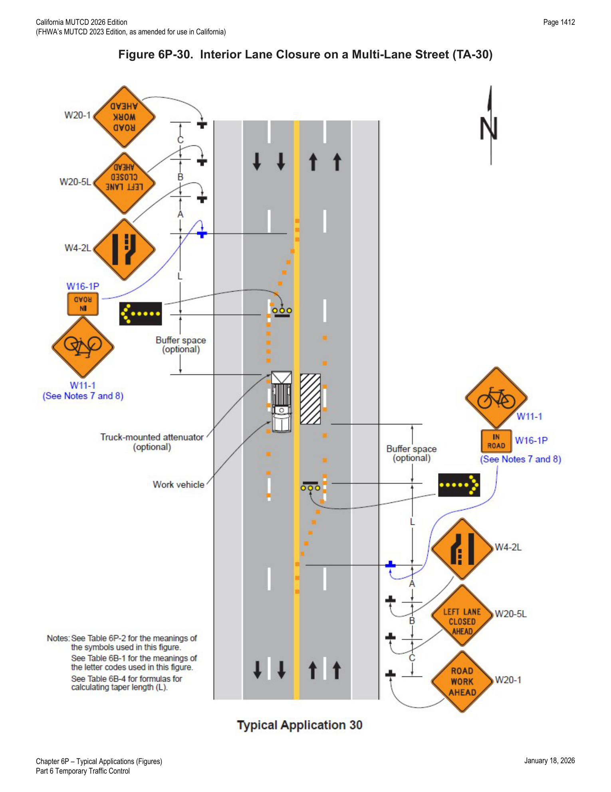
Applies to low-speed, low-volume urban streets; where speeds or volumes are higher, an additional LEFT LANE CLOSED XX FT (W20-5L) sign should be inserted between the signs shown. Bicycle guidance mirrors TA-6: the Bicycle Crossing (W11-1) sign with an IN ROAD/IN STREET plaque should be used where bicyclists can't stay on the shoulder through the zone.
TA-31 — Lane Closure on a Street with Uneven Directional Volumes
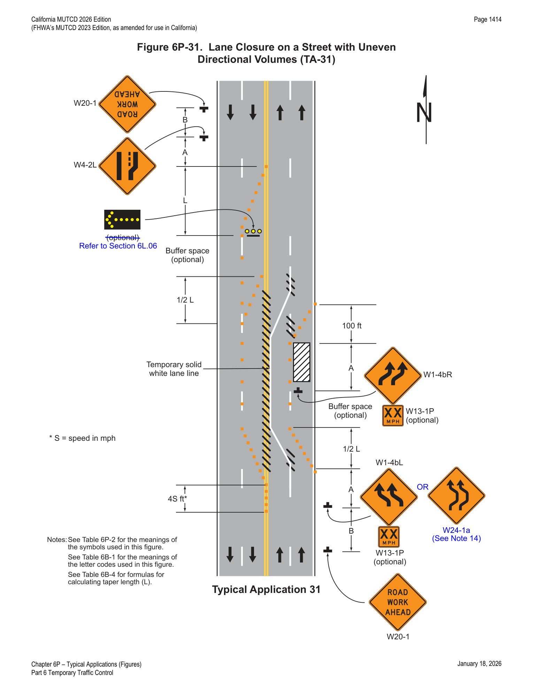
Used only where volume data confirms two lanes must be maintained in the heavier direction while one lane is closed there (Standard); a lane is borrowed from the lighter direction, and the procedure may even be flipped between peak periods. Reverse Curve (W1-4) or Double/Two-Lane Reverse Curve (W24-1) signage is selected by tangent distance and number of lanes shifted (Standard on lane-count matching); a longitudinal buffer space may separate opposing traffic, and channelizing devices where pavement markings still conflict should not exceed 1/2 S feet spacing (S = speed in mph), per Table 6K-101(CA).
TA-32 — Half Road Closure on a Multi-Lane, High-Speed Highway
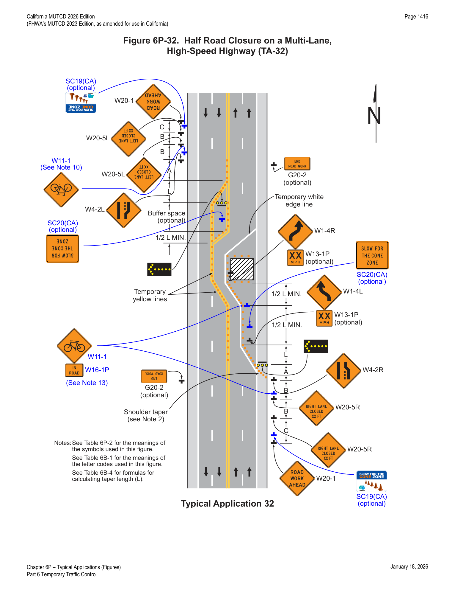
A full directional roadway is closed and traffic crossed to share the opposite roadway. Except for short-term and intermediate-term work, temporary pavement markings must clearly delineate the new travel path, and where that's not feasible, channelization must be made dominant with very close device spacing (Standard). Where an 8-foot-or-wider paved shoulder is closed, channelizing devices should close it in advance of the merging taper; Slow For The Cone Zone (SC19(CA)/SC20(CA)) signs per Section 6F.102(CA) and extensive bicycle-accommodation notes (mirroring TA-6/TA-30) also apply.
TA-33 — Stationary Lane Closure on a Divided Highway
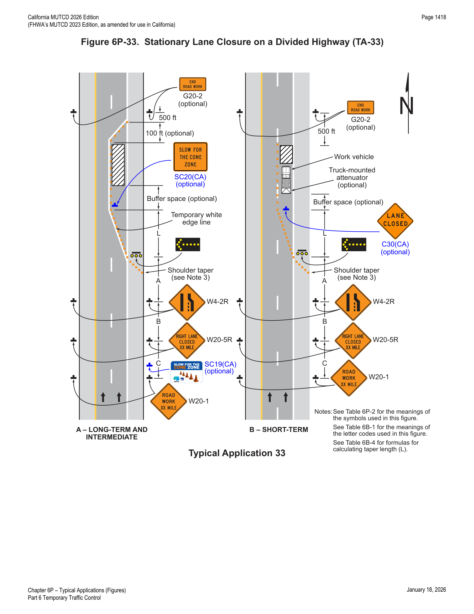
Shown in two variants — long-term/intermediate (A) and short-term (B) — this also governs work in the lane adjacent to the median, substituting LEFT LANE CLOSED signage and Lane Ends signs accordingly (Standard). An arrow board is mandatory whenever a freeway lane is closed, with a separate board for each lane closed (Standard); where an intersecting side road falls within the TTC zone, additional devices must be added as needed (Standard).
TA-34 — Lane Closure with a Temporary Traffic Barrier
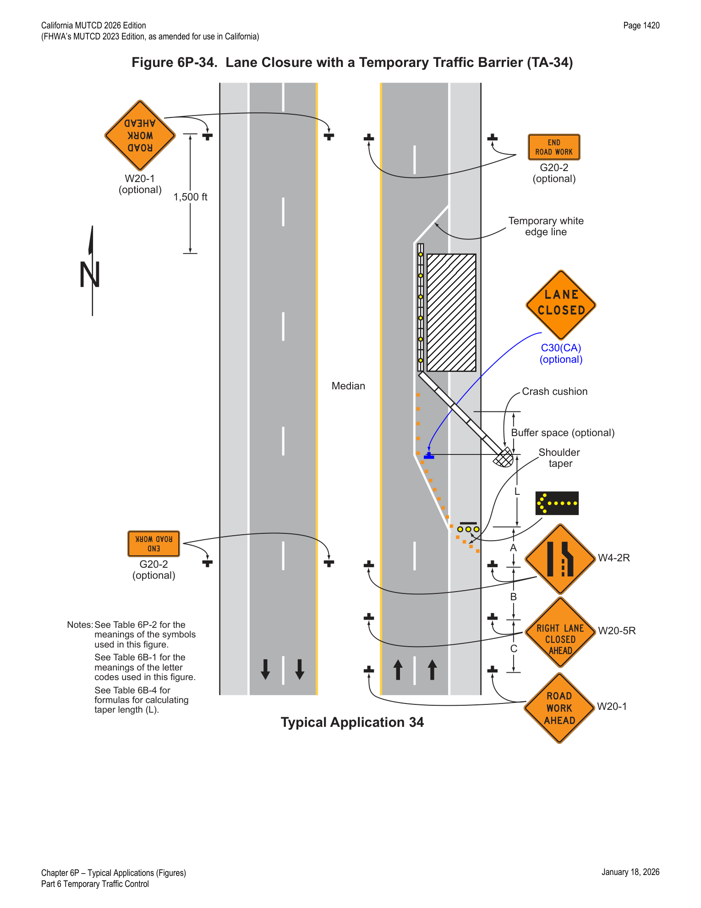
Also covers work in the lane adjacent to the median (Standard, with LEFT LANE CLOSED substitutions). The barrier must never be placed along the merging taper itself — the lane must first be closed with channelizing devices and pavement markings before the barrier is installed (Standard), and any barrier used must comply with Section 6M.02. Where a movable barrier is used instead of a fixed one, the temporary white edge line shown must not be used, and when the lane later reopens, signing and channelization must be changed to show only a shoulder closure, per TA-5 (Standard).
TA-35 — Mobile Operation on a Multi-Lane Road
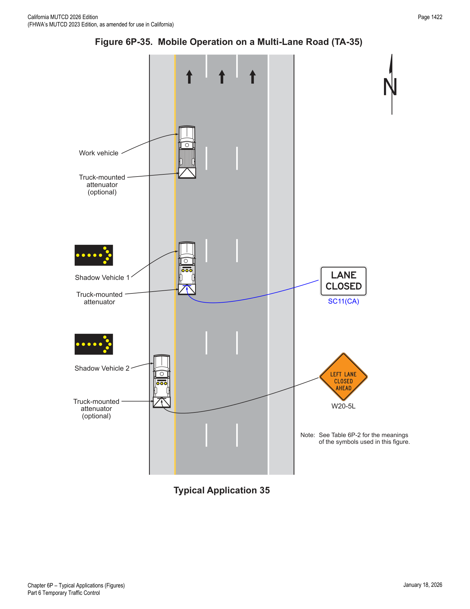
A three-vehicle convoy: the work vehicle, Shadow Vehicle 1 (arrow board plus truck-mounted attenuator) immediately behind it, and Shadow Vehicle 2 (arrow board) trailing at a varying distance to preserve sight distance for approaching traffic. Arrow boards must be at least Type B (60×30 in.), or Type II (72×36 in.) on State highways (Standard, per Caltrans Standard Specifications Section 12-3.30); an arrow board is mandatory whenever a freeway lane is closed (Standard). See Caltrans Standard Plans T15 and T16 for the State-highway procedures this drawing summarizes.
6N.13Work Within the Traveled Way of a Freeway or Expressway
TA-36 — Lane Shift on a Freeway
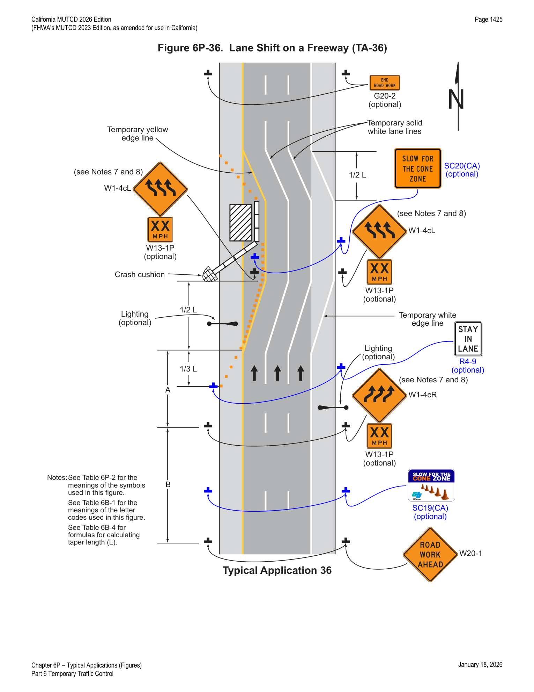
Shifts freeway lanes laterally around a work space using temporary solid white lane lines and 1/2 L / 1/3 L tapers, with SLOW FOR THE CONE ZONE (SC19(CA)/SC20(CA)) signage. The notes carry the chapter's standard set of bicycle-accommodation provisions — Bicycle Crossing/IN ROAD signage, speed-reduction countermeasures per Sections 6B.01/6C.04, and preference for merging the two left lanes rather than occupying the shoulder — wherever the shift affects a shoulder used by bicyclists.
TA-37 — Double Lane Closure on a Freeway
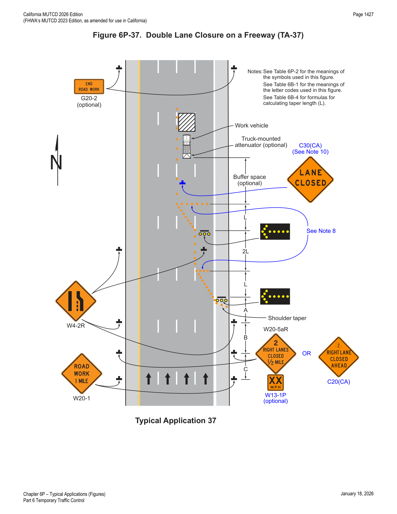
Two adjacent freeway lanes close together behind a single shoulder taper. A separate arrow board is required for each closed lane (Standard); channelizing devices spaced no more than 50 feet apart through the advance-warning/transition areas and 100 feet through the activity/termination areas (Standard, per Figure 6B-1); and 3 cones or 2 Type II barricades placed transversely across each closed lane at the end of each taper and every 2,000 feet thereafter, with LANE CLOSED (C30(CA)) repeated at the same 2,000-foot interval (Standard). See Caltrans Standard Plan T10 for the State-highway procedure.
TA-38 — Interior Lane Closure on a Freeway
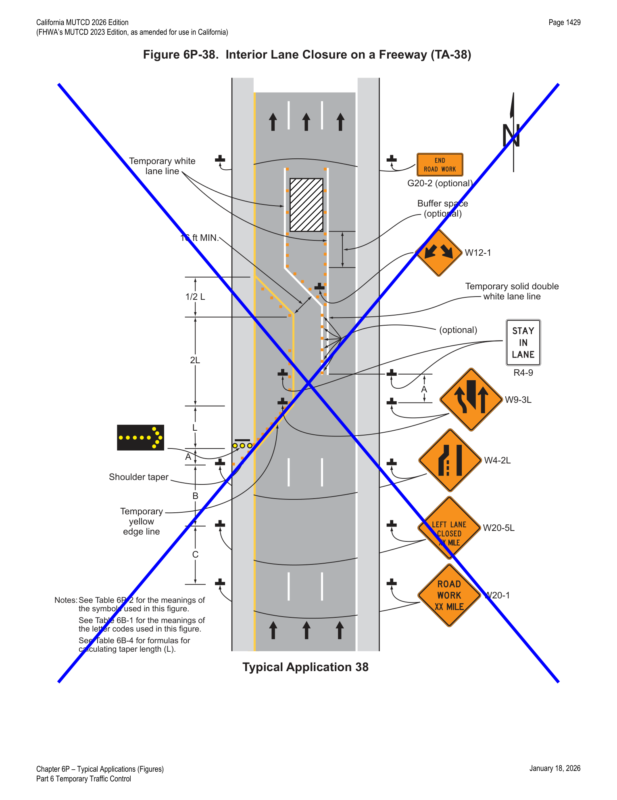
This typical application is deleted for use in California (Standard, Note 15) and is retained here only as the FHWA baseline drawing — whenever an interior freeway lane must be closed in California, all lane(s) adjacent to it on one side must be closed instead, using TA-37's double/multiple-lane-closure treatment. The FHWA drawing itself would have used channelizing devices to shift traffic before a barrier, then a barrier through the closed interior lane with a buffer space at its upstream end; for California work, rely on Caltrans Standard Plans T10, T10A, and T14 instead.
TA-39 — Median Crossover on a Freeway
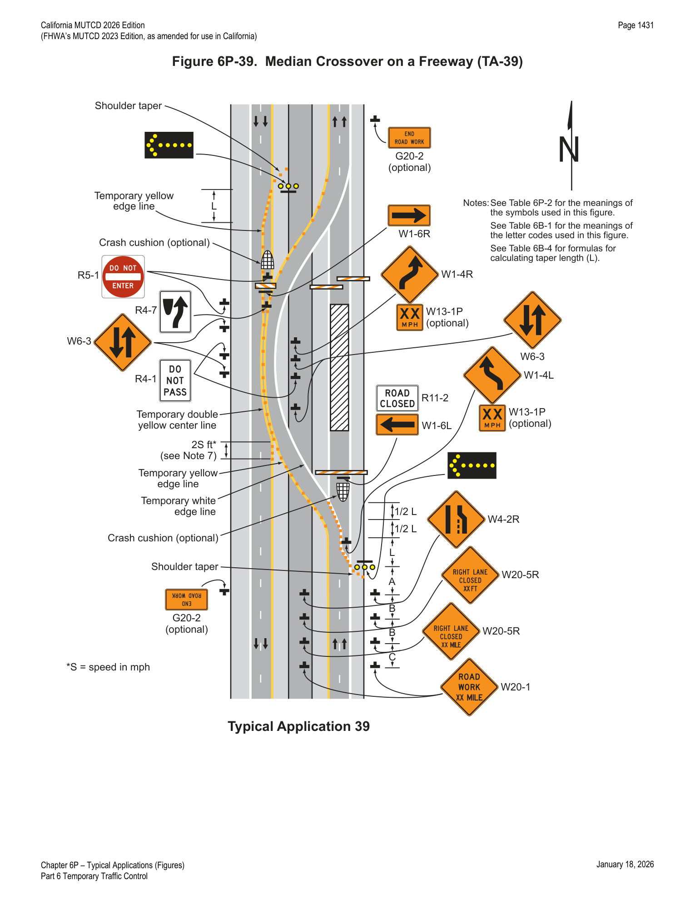
Carries one directional roadway's traffic across the median to share the opposing roadway. Channelizing devices or a temporary traffic barrier must separate the opposing flows (Standard), and an arrow board is required for each freeway lane closed (Standard). Two-Way Traffic (W6-3) signs should repeat every mile through the shared section (or may be eliminated entirely if a barrier separates the directions), and channelizing devices prone to misleading drivers off the intended path should extend 2 × (speed in mph) feet beyond the downstream transition.
TA-40 — Median Crossover for an Entrance Ramp
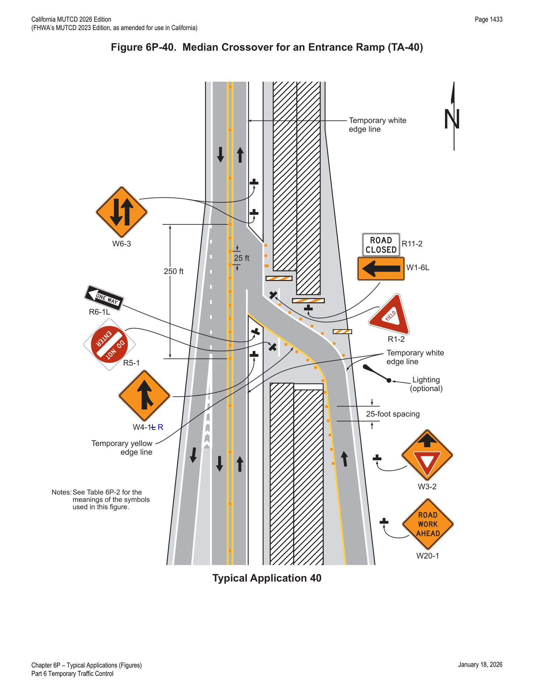
Carries an entrance ramp across a closed directional roadway so it can merge with traffic using the opposing roadway during a TA-39-style crossover. A YIELD (R1-2) or STOP (R1-1) sign is positioned to balance adequate sight distance for gap selection against the risk of encouraging stops in the mainline path, with a temporary acceleration lane facilitating the merge; the ramp may be closed outright if traffic conditions warrant.
TA-41 — Median Crossover for an Exit Ramp
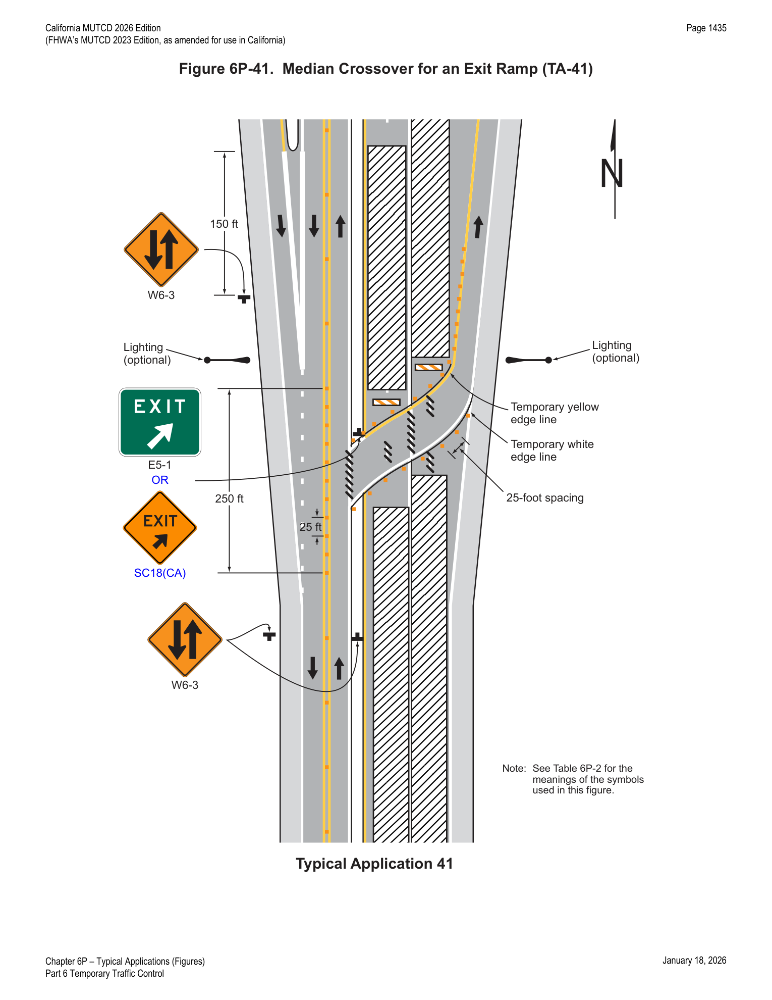
Relocates an exit ramp across the median during a directional-roadway closure. A temporary EXIT (E5-1) sign must be placed in the temporary gore, mounted at least 7 feet above the pavement for visibility (Standard); if the exit is instead closed, a black-on-orange EXIT CLOSED (E5-2a) panel should be placed diagonally across the interchange guide signs. Curved alignments should follow the AASHTO Green Book geometric design criteria.
TA-42 — Work in the Vicinity of an Exit Ramp
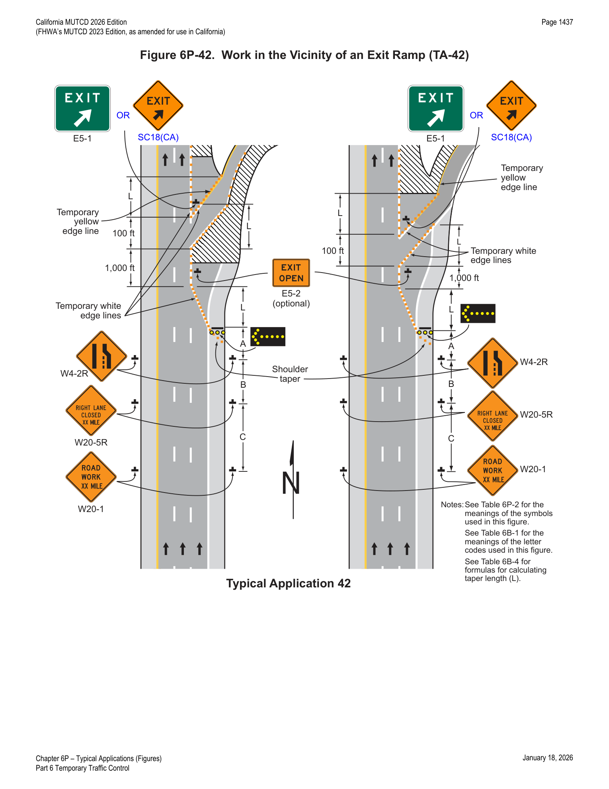
Governs freeway lane-closure work staged near (rather than across) an exit gore; the temporary EXIT sign requirement and 7-foot minimum mounting height from TA-41 carry over (Standard), as does the mandatory arrow board for each closed freeway lane (Standard). Caltrans Standard Plans T10, T10A, and T14 may be used instead of this drawing.
TA-43 — Partial Exit Ramp Closure
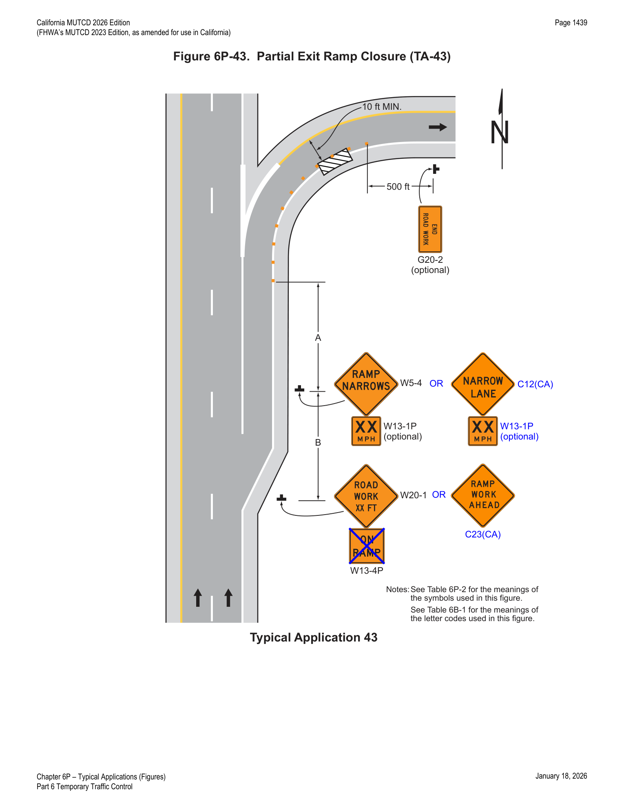
Narrows an exit ramp to a single lane rather than closing it fully, using RAMP NARROWS (W5-4) — or ROAD NARROWS/NARROW LANE(S) (C12(CA)) — signage and a 10-foot minimum lane width, with truck off-tracking behavior (Section 6N.07) a key sizing consideration. Consideration should be given to closing the entire ramp instead when practical, per Caltrans Standard Plan T14.
TA-44 — Work in the Vicinity of an Entrance Ramp
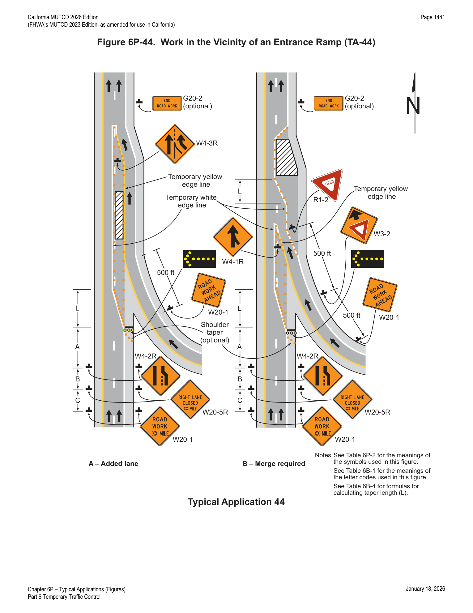
Shown in two configurations depending on available acceleration distance: where distance is adequate, a YIELD (R1-2) sign is used; where it is not, STOP (R1-1) signs (one on each side of the ramp) are mandatory (Standard) with a temporary stop line. A Stop Beacon (Section 4S.05) may supplement the STOP sign, and the mainline merging taper and its arrow board must be positioned far enough upstream that ramp drivers aren't confused and merging mainline traffic has stabilized before the ramp merge point.
TA-45 — Temporary Reversible Lane Using Movable Barriers
Illustrates a movable-barrier reversible lane on a 6-lane divided highway reduced to one closed side: traffic uses the remaining 3-lane roadway, and the center lane's direction is switched (typically twice daily) to match the heavier peak — Phase A (2 lanes one direction, 1 the other), the A-to-B transition, Phase B (the reverse), and the B-to-A transition. The transfer vehicle should park in a protected area behind the barrier's downstream end during each phase, and an arrow board is mandatory for each closed freeway lane (Standard); see Section 6M.02 for the movable-barrier provisions underlying the whole concept.
TA-46 — Work in the Vicinity of a Grade Crossing
Grouped separately in Table 6P-1 under its own 6N.17 activity, this drawing extends the buffer space of a flagging operation's activity area upstream of an active rail crossing so a queue never backs across the tracks. If queuing across the tracks cannot be avoided, a uniformed officer or flagger must be stationed at the crossing regardless of automatic warning devices being present (Standard), and DO NOT STOP ON TRACKS (R8-8) signs should be used on every approach within the TTC zone's limits. Early coordination with the railroad or transit agency before work starts is expected.
6N.04Work in the Vicinity of Bicycle Lanes and Shared-Use Paths
TA-47 — Bicycle Lane Closure without a Detour
Merges bicyclists into the adjacent travel lane where the bicycle lane itself must close. On roadways with a 30 mph or lower speed limit, BICYCLES ALLOWED USE OF FULL LANE (R9-20) applies if the adjacent lane is narrower than 14 feet; if that lane is 14 feet or wider, Bicycle Warning signage with an IN STREET/IN ROADWAY plaque is used instead. On roadways posted 35 mph or higher, a separate bicycle facility or detour (TA-48 or TA-51) should be considered rather than sharing the lane; SHOULDER CLOSED (W21-5a) governs limited-access roadways with no pull-off opportunity.
TA-48 — Bicycle Lane Closure with an On-Road Detour
Routes bicyclists onto the most direct practical on-road detour where the bicycle lane closes; a Street Name or Bike Route Name sign, where used, must be mounted above the Bike Detour sign (Standard). The same 14-foot lane-width branching logic from TA-47 (BICYCLES ALLOWED USE OF FULL LANE vs. Bicycle Warning/IN STREET plaque) governs the detour route itself.
TA-49 — Shared-Use Path Closure with a Diversion
Diverts shared-use path traffic onto a temporary paved path that must be at least as wide as the path it replaces; PATH CLOSED (R11-2c) and reverse-curve-style path warning signs (W24-1) are spaced at 100-foot intervals framing the diversion.
TA-50 — On-Road Detour for a Shared-Use Path
Where no parallel path diversion is feasible, path users are detoured onto the adjacent roadway using the most direct practical route; the Street/Bike Route Name-above-Bike-Detour-sign rule and the 14-foot lane-width branching logic from TA-47/48 both apply here as well.
TA-51 / TA-51(CA) — Paved Shoulder Closure with a Bicycle Diversion onto a Temporary Path
Applies where a paved shoulder that is part of a bikeway system is closed on a roadway posted 45 mph or higher, diverting bicyclists onto a temporary paved path; the A, B, and C dimensions should be sized to anticipated bicycle speeds, not motor vehicle speeds. The temporary path should match the existing facility's width where practical, and where a 60-inch minimum width can't be maintained throughout, a 60-by-60-inch passing space is required at least every 200 feet (Guidance). TA-51(CA) shows the California-specific DETOUR/BIKE LANE panel signing configuration for the same scenario; positive protection per Section 6M.02 may supplement either version.
6N.04 / 6N.12Work Affecting Pedestrian and Bicycle Facilities at an Intersection (California)
TA-101(CA) — Right Lane and Bike Lane Closure on Far Side of Intersection
This California addition layers a TA-22-style right-turn-bay conversion (RIGHT LANE MUST TURN RIGHT, R3-7) on top of a simultaneous bicycle lane closure past the same intersection, directing bicyclists into the shared lane via the Bicycle Warning (W11-1)/IN ROAD (W16-1P) combination and the California W74(CA) sign. The notes point back to Figures 6P-47 through 6P-51(CA) for handling the bicycle side of the closure in more detail, and to TA-29 if the closure also extends across a crosswalk. A high-level warning device (flag tree, Section 6L.08) may supplement the advance warning signs, and overhead sign placement should be considered for long-term projects (Section 6N.01).
6N.14Work in the Traveled Way of Roundabouts
TA-52 — Short-Term or Short-Duration Work in a Circular Intersection
Where a quadrant of a roundabout is closed, only one direction of approach traffic may be released through it at a time (Standard); WRONG WAY (R5-1a) signs must be covered (Standard), and flagger stations must be illuminated at night (Standard). YIELD, ONE WAY, and directional-arrow signs made confusing by the altered geometry should be covered or removed, and crosswalks may be closed outright or supplemented with warning signs about the reversed traffic direction. Intermediate- or long-term work should close the roundabout entirely and detour traffic per TA-8.
TA-53 — Flagging Operation on a Single-Lane Circular Intersection
Flaggers, following Sections 6D.05–6D.06, are stationed on every approach and must coordinate with each other so traffic enters the circular intersection from only one point at a time (Guidance); flagger stations must be illuminated at night (Standard). Pedestrian facilities closed or relocated for the operation must remain detectable and accessible per TA-29 (Standard), and pilot vehicles may be used to guide larger trucks through the altered geometry.
TA-54 — Inside Lane Closure on a Multi-Lane Circular Intersection
Closes a lane (left or right side, as needed) on a multi-lane roundabout approach while the roundabout stays open, repeating the same sign sequence on every approach. Pedestrian facility accessibility requirements again follow TA-29 (Standard), and a portable changeable message sign may help orient drivers approaching from any direction. Where traffic cannot be accommodated on the remaining lanes, the roundabout should be closed and detoured per TA-8 instead.
★ Key Takeaways — Chapter 6P
- Chapter 6P is an index of 59 Typical Application (TA) drawings — 54 base FHWA numbers plus five California additions/variants (TA-19(CA), TA-24(CA), TA-51(CA), TA-101(CA), TA-102(CA)) — grouped by the 6N activity chapter each illustrates (shoulder work, two-lane highways, urban streets, intersections/sidewalks, multi-lane highways, freeways, grade crossings, bicycle/shared-use facilities, and roundabouts).
- Every drawing is a minimum Guidance-level solution (Section 6P.01); the notes accompanying each figure are individually classified Standard/Guidance/Option/Support and frequently elevate specific details (arrow board use, barrier compliance, accessibility features) to mandatory status even though the drawing as a whole is only a starting point.
- Dimension letters (A, B, C…) trace back to Table 6B-1, and taper lengths (L, 1/2 L, 1/3 L) trace back to the formulas in Table 6B-4 — always resolve these against actual design speed before using a drawing in the field. Table 6P-2 defines every pictorial symbol used across all 59 drawings.
- Several California deviations from the FHWA baseline are important to catch: TA-17 (mobile operations) and TA-38 (interior freeway lane closure) are both explicitly prohibited on California State highways, with Caltrans Standard Plans (T17, and T10/T10A/T14, respectively) required instead; TA-24 vs. TA-24(CA) depend on whether the intersection approach is stop/beacon-controlled or signal/uncontrolled.
- Positive protection (Section 6M.02), flagger procedures (Sections 6D.05–6D.06), Automated Flagger Assistance Devices (Section 6L.02), and channelizing-device spacing limits (Table 6K-101(CA)) are the recurring cross-references that govern the individual devices shown in nearly every drawing — consult those chapters before finalizing any TTC plan built from this index.